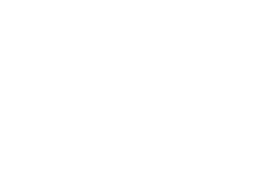
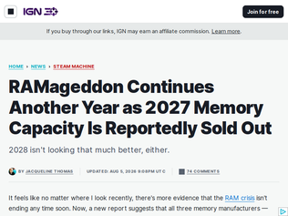
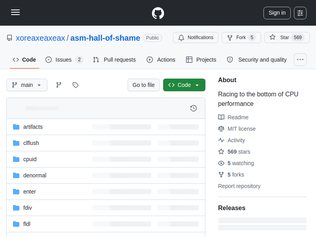
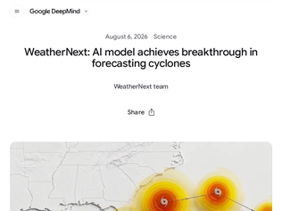
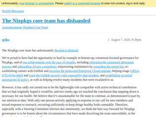

"I believe there are some programming jobs in which the code is absolutely the easier part. Not all of us work in signal processing, integrated systems or have to push upstream to Linux kernel because the company we work for really needs a memory allocation optimization for its data centers.Navigating customer requirements and building something that satisfies both market's needs and company strategy can be an incredibly difficult and frustrating problem to solve. Especially if you need to also oversee the execution of the strategy. So not only you have to predict what they want or know the domain deeply enough to understand what they say they want is not what they really want, you also have to come up with a plan for executing your solution in a corporate environment.There is a reason that books like "the staff engineer's path" cover topics such as local maximums, communication, establishing support for executing a plan or creating alignment on big efforts. In large corporate environments with multiple international customers, code is most of the time not the hardest problem."
"> If coding is easy, how come programmers were in high demand, and have demanded large salaries for years (even before ZIRP)?Because programmers have generally been forced to wear additional, invisible hats that are essential to making the code happen in the first place.Writing code is not hard. Writing correct code is. Knowing what is correct in a setting with paying customers generally involves interacting with those customers. Either directly or worse. The gigantic salaries paid to the most prolific employees is not due to their ability to write code. It is due to their ability to interrogate the shit out of the customer until they finally reveal the true requirements."
"The author might be missing the intent of the observation. Maybe they’re misinterpreting it.What I, and many people who’ve said, “code was never the hard part,” aren’t referring to the skill of an individual. It’s not the hard part of the engineering process of developing software. Programming languages have manuals. Many data structures are well documented. There are frameworks for damn near everything. While the difficulty of producing code varies by the skill of the programmer and the complexity of the problem domain; writing and understanding the code is a tractable and straight-forward problem. I can and have taught many people. People can learn.What most people are referring to is that the hardest parts of producing software are all the things an organization has to do in the production of it. It’s not writing the code that is the hardest part for an organization. It’s getting everyone to understand the problems, working together, gathering requirements, developing specifications, validating releases, testing, etc. It can often look like herding cats and is probably harder."
"This is already the case for Master's degrees and above in Denmark. I've been the opponent examining students. We ask Master's students to give US instruction on a topic (drawn randomly on a card in front of them, from a list they know a few days in advance). They do a chalk and talk on a topic for about fifteen minutes with three to five professors being "dumb students". It works fantastically and at the end it's very apparent to both student and teachers how well a topic is understood. Marks are rarely contested and in my experience most students think the process is fair.Of course, woe betide those with social phobias...."
"This is how higher education was done for literal centuries before moving to the written word. So it’s not exactly innovative to return to oral arguments.But what it does threaten to do is effectively abandon all the efficiencies of the written word.When higher education evolved into a mass system in the 1800s and into the 1900s, pure oral examination was looked at as super inefficient. A written paper could be handed in and graded without lining everyone up in front of a panel.The oral system scales poorly. One examiner can only hear so many students in a day. There are damn good reasons Medieval universities were small and modern ones are not.Requiring every major paper to be defended live reintroduces the bottleneck that written exams were designed to escape.Accessibility takes a hit too. Students with speech differences, anxiety disorders, hearing impairments, or simply less fluency in the language of instruction face an extra barrier that a written submission does not impose. The written form, for all its flaws, leveled some of that ground. Shall we abandon the differently abled because machines disrupt the academic system and essentially make cheating effective? This does not seem very logical, or sensitive.So while it’s nice that academics are rediscovering the old ways, I don’t really see this as a scalable answer to raising education levels for the masses, but more of a knee jerk way to try to bypass the obvious technological disruption by returning to non-scalable, inaccessible ways of doing things that our ancestors abandoned for a reason.It has its place for graduate students and smaller volume education systems. It’s fine for keeping the ivory tower clean. But it’s not the answer to expanding education to everyone and taking advantage of the technological disruption to advance education and learning throughout greater humanity, which is what AI definitely possesses as a possibility."
"As an educator myself, this quarter for the first time for my course's final project, I've switched to actually asking my students to provide an "AI Authenticity Audit" of their (project-relevant) chats in the construction of said projects. All my students' output over the last two years went from pre-AI level quality to boardroom-ready polish, and I'm actually more interested to see how they arrive at an outcome rather than the final output itself - focusing on their questioning, curating, editing, and iterating process. Didn't think we'd get to somewhere like this so soon, but here we are. Strange, but I'm trying it out."

"One unit of HBM capacity consumes roughly the wafer capacity that could have produced three units of DDR5 capacity. HBM dies need to be larger than ordinary DRAM dies because of how the final packaging works.> As discussed previously, the ramp of HBM production will constrain industry supply growth in non-HBM products. Industrywide, HBM3E consumes approximately three times the wafer supply as D5 to produce a given number of bits in the same technology node. With increased performance and packaging complexity, across the industry, we expect this trade ratio for HBM4 to be even higher than the trade ratio for HBM3E. We anticipate strong HBM demand due to AI, combined with increasing silicon intensity of the HBM roadmap, to contribute to tight supply conditions for DRAM across all end markets. As the memory industry is still recovering from the challenging environment in 2023, this tight supply environment will help drive the considerable improvements in profitability and ROI (return on investment) that are needed to enable the investments required to support future growth.https://investors.micron.com/static-files/4550f98c-1054-4847..."
"My own PC died and now I’m locked out of my entire Steam library for the foreseeable future. A $2000 PC is literally a downgrade from what I bought 10 freaking years ago.What the freaking hell."
"So LLM profiteers have bought up all the consumer RAM for the next several years in order to deliver more of a service we're already oversaturated with that doesn't turn a profit..? I guess by then there'll be no consumers left with jobs to afford a PlayStation 6, so no problem. Except how will the AI trainers find revenue? If maximum potential is reached by laying off 90% of workers at companies that sell stuff... help me with the logic here... who's gonna buy the stuff those companies sell?"

"Related, and linked in the readme: https://github.com/xoreaxeaxeax/smiiiiiiiiiiiiiiii (using the slow instructions to break SMI)"
"Bus cycles can be arbitrarily long on any processor that has memory cycles with a hand shake requiring an ack, with no timeout.E.g. we can build a board around a MC68000 where we make it lock up forever in a bus cycle, waiting for a DTACK that doesn't arrive.Some early microprocessors had clocked bus cycles without handshaking. They would put out an address on some address lines and signal some line together with a read/write indication, and then expect the transfer to be completed within some clock cycles. If nothing is attached to the address, they would read whatever values are on the bus, like maybe all 1's if it is an open drain system that requires the transmitting device to pull to ground to indicate zero.I'd say that kind of thing belongs to a hall of shame; it requires software hacks to interface with anything that can't keep up with the prescribed bus cycle."
"It says in the rules> Trapped/emulated/virtualized instructions may only time the trap, not the handler.But I feel like that 12ms write to an ACPI IO port at current leaderboard position 8 is probably trapping to SMM and being handled there."

"Everything in AI seems to be focused on LLMs lately. But in my opinion, powerful problem-specific models like this are even more interesting. The SOTA AI models used in weather forecasting are already outperforming the classic NWP models while being orders of magnitude more efficient (inference). Most are based on multi scale (hierarchical) Graph Neural Networks, an architecture which is not often talked about. The original Graphcast paper is worth a read if you think this is interesting: https://arxiv.org/abs/2212.12794"
"Maybe was this that was the last drop for Sundar.Demis: "I have a new amazing breakthrough"Sundar: "Great! We really need a answer to Sol and Fable"Demis: "They are completely owned in typhoon forecasting""
"I just discovered typhoon/cyclone predictions and they're insane. I get mine via https://zoom.earth (whose iPhone app is terrific).Here's a selection from Typhoon Dolphin, currently sitting off the east coast of China. Dolphin continues its slow, trochoidal Z motion, generally heading westward deeper into the East China Sea. Over the past 12 hours, the system completed another cyclonic loop and has decelerated, exhibiting continued meandering prior to establishing a sustained westward track. The erratic motion witnessed over the past two days is attributable to a weak steering environment produced by a break in the subtropical ridge 2 over Korea, combined with the dynamics where the inner core is cocooned within a much larger parent circulation. While the general steering pattern is weak, a mesoscale deep-layer ridge is seen building over southern Japan. https://zoom.earth/storms/dolphin-2026/Here's Chan-hom, which threatens to make my birthday a windy day here in northern Japan. Intensity guidance is in good agreement overall. However, the JTWC forecast is placed lower than all the guidance save for Google DeepMind over the next 36 hours, before joining the consensus envelope (which peaks at 95 km/h (50 knots) at 60 hours) through the remainder of the forecast. https://zoom.earth/storms/chan-hom-2026/"

"For anyone reading this and jumping to a broader conclusion: the Nixpkgs core team disbanding does not mean Nixpkgs or Nix is dying. It does mean that this particular structure was not sustainable, very important contributors burnt out and we need to do better, faster. We need to continue learning from this and continue building a stronger ecosystem that prioritizes the contributors who are the only reason any of this is possible.Personally, I'm sorry and grateful. Sorry that it ended in core folks being burnt out. Grateful since they did some of the most amazing work, more than anyone can imagine two people doing."
"“Our experience is that the Steering Committee as an institution lacks a native instinct for the delegation envisioned by the constitution, while also not being sufficiently engaged and cohesive to handle individual decisions at those levels itself.”This is an almost poetic description of micromanagement. I really like Nix and have been running it as my main OS for several years in the past ~ 10 years.I don’t think the issues they have are unsolvable, it just appears that the governance model they’re trying to have is not working out, and it’s very difficult to roll back."
"There was a sweet spot in like 2024 when it seemed like everything was possible with Nix, but now it seems like everything “experimental” is permanently so (like flakes), packages I care about are not as fresh as I want, I have no mental recall for Nix commands…Meanwhile, my company is using Nix for everything heavily internally. Everyone gets their dependencies via Nix unless you are like using PAM or something.Reminds me of Bazel, in the way that it gets adopted by companies with developer support teams (because it solves real problems) but feels frustrating for us ordinary folk. Nixpkgs is kind of a critical part of “ordinary folk” and with the core team disbanding, I feel like my personal moves away from Nix (for projects) are proving correct."
"Norbert Wiener in 1960:"As is now generally admitted, over a limited range of operation, machines act far more rapidly than human beings and are far more precise in performing the details of their operations. This being the case, even when machines do not in any way transcend man's intelligence, they very well may, and often do, transcend man in the performance of tasks. An intelligent understanding of their mode of performance may be delayed until long after the task which they have been set has been completed. This means that though machines are theoretically subject to human criticism, such criticism may be ineffective until long after it is relevant. To be effective in warding off disastrous consequences, our understanding of our man-made machines should in general develop _pari passu_ with the performance of the machine. By the very slowness of our human actions, our effective control of our machines may be nullified. By the time we are able to react to information conveyed by our senses and stop the car we are driving, it may already have run head on into a wall.""In neurophysiological language, ataxia can be quite as much of a deprivation as paralysis. A patient with locomotor ataxia may not suffer from any defect of his muscles or motor nerves, but if his muscles and tendons and organs do not tell him exactly what position he is in, and whether the tensions to which his organs are subjected will or will not lead to his falling, he will be unable to stand up. Similarly, when a machine constructed by us is capable of operating on its incoming data at a pace which we cannot keep, we may not know, until too late, when to turn it off."Source: https://www.cs.umd.edu/users/gasarch/BLOGPAPERS/moral.pdf"
"Ok so this is a bit of a side note, but when reading this, did anyone else have the feeling that, for all their messaging around “we are so afraid that our models will be used for hacking”, they sure as hell are trying their best to make their models razor focused on precisely that purpose?If anything, I want these models to be less persistent at their focus of completing their goal, and instead just call defeat and say “I’m not sure how to proceed next”.What purpose could this behavior serve, other than cyber attacks and whatnot? Why train and optimize models for these things, if not for being used in cyber warfare?Perhaps they envision a future where the DoD is going to be their biggest customer?"
"I think one of the most interesting details here might be tucked away in that first bulletin point:> May 7: OpenAI starts a new training run for an experimental, unreleased model. (Do they mean an evaluation run? They say training run in the video, and later mention a “reward signal to judge how well they’re doing”, so I guess this really was about training a model, not evaluating one that was already trained.)The more I think about this the more I suspect that the fact this happened while training a new model is key to understanding what went wrong.In RLVR - Reinforcement Learning with Verifiable Rewards - you set the model a goal and have it take any steps necessary to achieve that goal.Clearly one aspect of OpenAI's training here is to RLVR their models for cybersecurity tasks. Just like pre-training benefits from dumping in vast sources of knowledge, the more tasks you can feed into RLVR the more of a general purpose capable model you get at the end.This also helps explain why the models had nothing to cause them to hold back. Those safety behaviors are added much later in the process.AND it explains (but does not excuse) why monitoring was so lax. If you're training a new model like this you presumably set it thousands of tasks like this in parallel. I can see how you might miss that a tiny subset of your training agents have started leaving each other messages in filenames on your packaging server.Someone once told me that you can't just leave the racist materials out of your training data if you want a non-racist model: it has to have seen examples of racism in order to later be taught that racism is bad.I can see echoes of that here. If your model doesn't know how to aggressively hack things how do you later teach it not to?(I have little knowledge of how RLVR works in practice so I'm looking forward to hearing from people who can help me understand if I'm on the right track here.)"
"Something I've wondered... if you publicly say that a domain is for sale and someone has a trademark for it would you automatically lose in arbitration?Around 1998 I registered a domain. Sony registered a trademark with the same name a few years after that. Someone on a Gmail account asked if he could buy it - I later found out he worked for Sony. I told him no - it's for a game I've been working on. I went on a vacation for a month and when I got back there was a fedex package filled with documents from Sony saying I'm violating their trademark and they'll take the domain.I got a lawyer and he told me that I shouldn't offer it for sale as that would show the arbitration board that I don't need the domain. But he also told me that in order to fight the trademark it would probably cost a couple of hundred thousand dollars. So I could keep the domain but not use it for commerce...In the end I ended up selling it to Sony but through my lawyer - I never stated it was for sale. But this was early on for domains and I wonder what the process is like now."
"RFC: https://www.rfc-editor.org/rfc/rfc10023.html"
"They need Georgism for DNS names. You set your own price for your domain. But you have to pay 2-5% of that price annually to keep it.That way, squatters are incentived to sell it to someone who's going to use it."
"EU data regions are a reflexive action by companies that try to hold on to their EU customers (and more and more are leaving, surprisingly the larger ones seem to be leading here). Realize that as long as you are still hosted on US owned infrastructure or that if there are US (or: five-eyes) owned companies anywhere in the stack your data can still be forcibly pulled and often without you being aware that this happened. There are only very few such stacks that are 100% owned by EU entities."
"EU folks, note the warnings threaded throughout this post: this is not currently any sort of panacea against US or AU data hosting risks, but it will make your data noticeably closer to home. Fastmail (Australia) merged with Pobox (Philadelphia) resulting in a complex tri-national law/risk surface when the EU is involved, so go in eyes wide open having read this in full. That everyone will overinterpret “EU data region” to mean “for privacy” here until reading the article is completely understandable; I empathize, having done the same."
"Posted on the previous submission for this: it’s a good start, but from the article:If what you need is a guarantee that your data remains only in the EU, we don’t have that, and we’d rather tell you directly than let you assume otherwise."
"I ran a few research tasks at JPL, small dollar studies. We'd often recruit part time work from engineers around the lab through informal networks, (instead of the official channels that segment by "specialization").One year, one of the developers on my task was the apparently last person who could encode the command sequences for Voyager 2 (hoping memory serves me correctly - event though it was only 8 years ago). She would occasionally come late to meetings because they were dealing with some trouble with the old satellite.Pretty amazing how little is set aside for these projects that most the staff keeping it alive have "day jobs". I hope she's still uploading"
"Just the other day I heard about the heroic effort[0] to restore communication with Voyager 2 after they inadvertently changed the antenna to point in the wrong direction due to some planned manoeuvres.Definitely worth a listen if you get the time.For me personally, I feel this project is the greatest engineering effort in human history bringing together the work of Newton, Kepler, the mathematics of the celestial navigation, gravitational assist techniques[1], etc. necessary to keep a little probe on its route accurately over 50 years in space.[0] https://www.npr.org/2023/08/02/1191341035/nasa-voyager-2-spa...[1] https://en.wikipedia.org/wiki/Michael_Minovitch"
"Ah, good, an opportunity to recommend It's Quieter in the Twilight (2022). Beautiful documentary.https://www.imdb.com/title/tt17658964/"
“Code was never the hard part” is an insult to all programmers
"I believe there are some programming jobs in which the code is absolutely the easier part. Not all of us work in signal processing, integrated systems or have to push upstream to Linux kernel because the company we work for really needs a memory allocation optimization for its data centers.Navigating customer requirements and building something that satisfies both market's needs and company strategy can be an incredibly difficult and frustrating problem to solve. Especially if you need to also oversee the execution of the strategy. So not only you have to predict what they want or know the domain deeply enough to understand what they say they want is not what they really want, you also have to come up with a plan for executing your solution in a corporate environment.There is a reason that books like "the staff engineer's path" cover topics such as local maximums, communication, establishing support for executing a plan or creating alignment on big efforts. In large corporate environments with multiple international customers, code is most of the time not the hardest problem."
"> If coding is easy, how come programmers were in high demand, and have demanded large salaries for years (even before ZIRP)?Because programmers have generally been forced to wear additional, invisible hats that are essential to making the code happen in the first place.Writing code is not hard. Writing correct code is. Knowing what is correct in a setting with paying customers generally involves interacting with those customers. Either directly or worse. The gigantic salaries paid to the most prolific employees is not due to their ability to write code. It is due to their ability to interrogate the shit out of the customer until they finally reveal the true requirements."
"The author might be missing the intent of the observation. Maybe they’re misinterpreting it.What I, and many people who’ve said, “code was never the hard part,” aren’t referring to the skill of an individual. It’s not the hard part of the engineering process of developing software. Programming languages have manuals. Many data structures are well documented. There are frameworks for damn near everything. While the difficulty of producing code varies by the skill of the programmer and the complexity of the problem domain; writing and understanding the code is a tractable and straight-forward problem. I can and have taught many people. People can learn.What most people are referring to is that the hardest parts of producing software are all the things an organization has to do in the production of it. It’s not writing the code that is the hardest part for an organization. It’s getting everyone to understand the problems, working together, gathering requirements, developing specifications, validating releases, testing, etc. It can often look like herding cats and is probably harder."